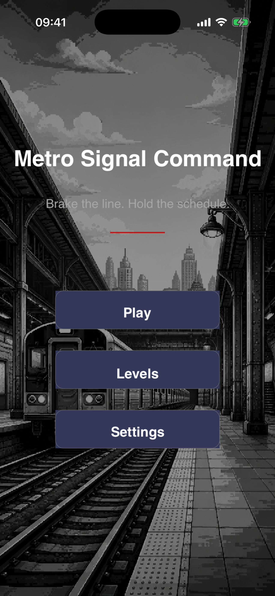
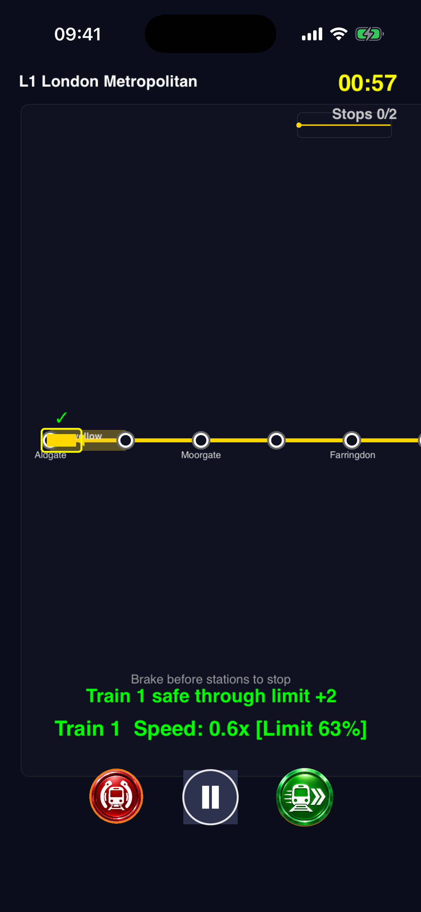
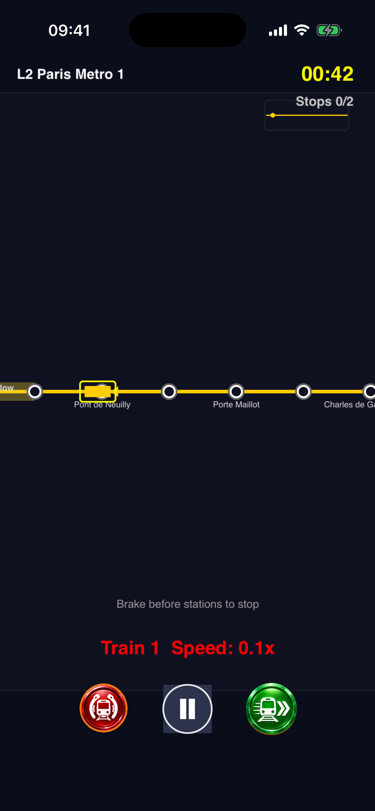
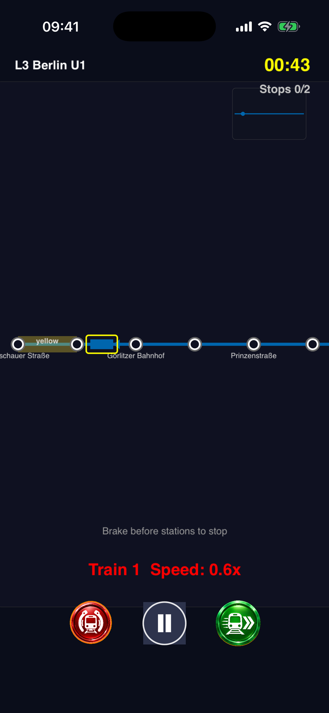
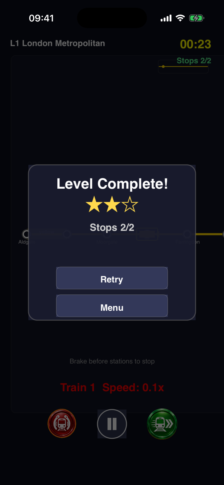

Metro Signal Command
Dispatch the midnight metro across 50 world cities
You are the night-shift dispatcher. Accelerate, brake, dodge speed limits, and resolve faults across 1372 real stations. Fully offline. No ads. No IAP.
Screenshots

Main Menu
Start your shift, browse levels, or adjust settings.

Dispatch
Accelerate and brake trains through the night shift.

Speed Control
Respect speed-limit zones and keep trains apart.

Multi-Train
Control 1-4 trains with staggered departure times.

Level Complete
Earn up to 3 stars across punctuality, faults, and satisfaction.
About Metro Signal Command
Metro Signal Command is an offline metro train dispatch puzzle built with SpriteKit. You play the night-shift OCC dispatcher for 50 real-world metro lines, keeping trains on time through 60-second shifts while managing speed limits, train spacing, and sudden faults.
Progress scales from a single train in Europe (L1-L10) to four coordinated trains across South America and Oceania (L41-L50). Each level is a real metro line with real station names.
Scoring blends punctuality (40%), fault response (30%), passenger satisfaction (30%), and a combo bonus. Reach 80 for three stars.
How to Play
Select a train
Tap any train to select it. The first train is auto-selected at level start.
Accelerate and brake
Tap the green + button to speed up (+0.05 per tap, up to 2x). Tap the red brake to slow down.
Respect speed limits
Yellow zones warn, red zones enforce. Safe passage builds a combo; speeding costs 8 points.
Keep your distance
Trains too close auto-brake and lose 10 points. Stagger departures to avoid collisions.
Resolve faults
Signal caps speed, door adds dwell, crowd adds delay. Tap Resolve Fault quickly for max score.
Survive 60 seconds
Reach 80 for 3 stars, 60 for 2 stars, 40 for 1 star. Clear the level to unlock the next city.
Support
How do I play?
Tap a train to select it, then use the green + and red brake buttons. The first train is auto-selected when a level starts.
Does it need internet?
No. Metro Signal Command is fully offline. No accounts, no ads, no in-app purchases, no analytics.
Need help?
Contact support through the Metro Signal Command App Store product page.